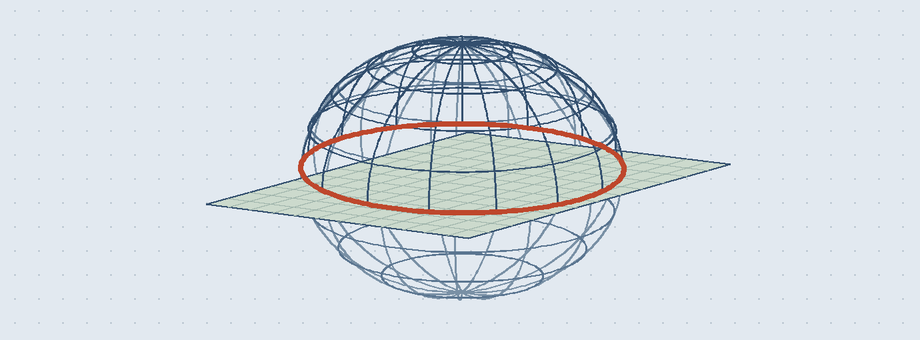

Research · Analysis of PDEs
Waves on a
hypersurface.
A wave moves through space. Its nonlinear interaction takes place on a thin interface. What does that geometry allow us to prove about its evolution?

Well-posedness for the Cubic Nonlinear Schrödinger Equation With Nonlinearity Supported on a Hypersurface
The cubic term samples the wave on an interface Σ. In the equation below, δΣ denotes surface measure and μ determines the sign of the interaction.
In two dimensions, take Σ to be a line or the unit circle. We obtain global well-posedness in H¹ for arbitrary defocusing data and for sufficiently small focusing data. The solution conserves mass and energy.
For a hyperplane in higher dimensions, tangential Sobolev regularity gives local well-posedness. On a sphere in dimensions three and above, radial H¹ data give global solutions under the same sign or smallness conditions. Theorems 1.2–1.4
The wave on the cover
The homepage plot follows the free Schrödinger equation in two dimensions. It starts with a radial Gaussian whose phase changes with the square of the radius. The rings spread out as time advances.
Here r² = x² + y², s = 0.24 − 1.40i and q = 1 + 4ist. Choose Re ψ to see the signed oscillations or |ψ|² to see the density. Both views use the same vertical scale.
Play with the wave